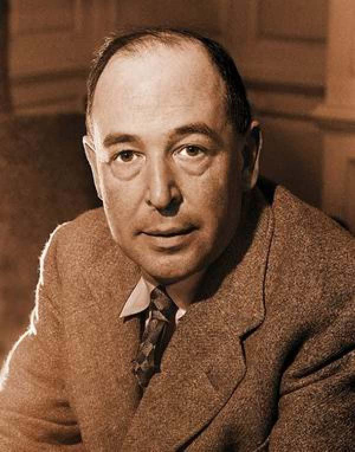

Clive Staples Lewis, conhecido como C.S. Lewis, foi um escritor, professor e pensador britânico amplamente reconhecido por suas obras de fantasia, apologética cristã e literatura acadêmica.
Entre seus trabalhos mais famosos estão As Crônicas de Nárnia, Cristianismo Puro e Simples e Cartas de um Diabo a seu Aprendiz. Seu legado permanece influente tanto na literatura quanto no pensamento cristão.